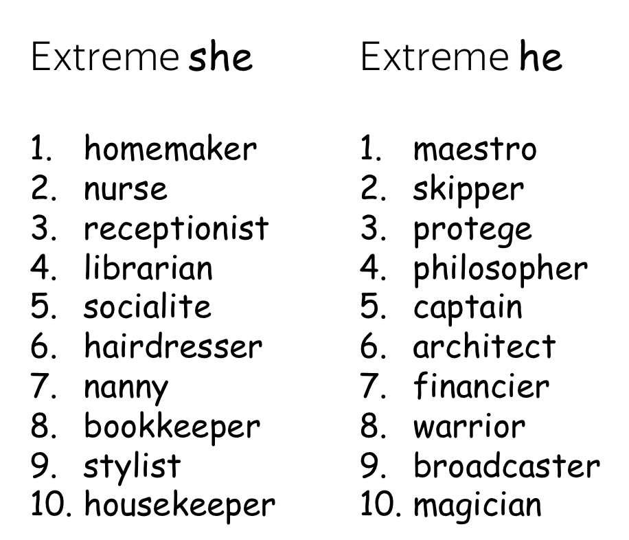

词嵌入（Word Embeddings） (英文原文)

机器学习模型“查看”数据的方式与我们（人类）不同。例如，我们可以很容易地理解文本“我看到了一只猫”，但模型却不能，模型需要特征向量。这样的特征向量被称为词嵌入，是一种可以输入模型的词语表示。

工作原理：查找表（词表） (英文原文)
在实践中，你有一个事先确定好的词汇表。对于每个词汇表中的单词，查找表都有该单词对应的词嵌入，我们可以使用单词在词汇表中的索引找到该词嵌入。

为了表示未登录词（即不在词汇表中的词），词汇表通常包含一个特殊的单词 UNK。当然，我们也可以选择忽略未登录词，或者简单分配一个零值向量。
这堂课的核心问题是：我们该如何获得这些词向量？ (英文原文)
离散符号表示：独热向量（One-hot Vectors） (英文原文)

最简单的词向量表示方法是用独热（One-hot）向量表示每个单词：对于词汇表中的第 i 个单词，独热向量的第 i 个维度为 1，其余为 0。在机器学习中，独热向量是表示分类特征最简单的方法。
你大概能猜到为什么独热向量不是表示单词的最佳方式。它的一个已知问题是，独热向量在词汇表较大时会变得非常长，因为独热向量的维度就等于词汇表大小，这在实践中是不可取的。但这并不是最关键的问题。
真正重要的是，独热向量对它们所代表的词语一无所知。例如，明显背离常识的是，独热向量居然认为 “猫”到“狗”和“桌子”的语义距离一样近！因此，我们认为独热向量没有捕捉到单词含义。
那么问题来了，我们怎么知道什么是含义呢？
分布式语义 (英文原文)
为了捕捉单词向量表示的含义，我们首先需要定义可以在实践中使用的“含义”的概念。为此，让我们首先来了解人类如何知道哪些词具有相似的含义。
How to: go over the slides at your pace. Try to notice how your brain works.


人类有一种能力：一旦你看到未知词语在不同语境中的使用方式，你就能够理解它的含义。那人类是怎么做的呢？
猜想是：你的大脑搜索了其他可用于相同语境的词，找到一些单词（例如，葡萄酒），并得出结论 tezgüino 与这些词具有相似的含义。这就是分布假设：
经常出现在相似上下文中的词具有相似含义。
Words which frequently appear in similar contexts have similar meaning.
编者按：分布假设的一个通俗版本是“观其伴而知其意” （You shall know a word by the company it），源自J. R. Firth，1957。实际上，也有更早的人说过类似的话，例如 Harris, 1954。
这是一个非常有价值的想法：可以用在实践中让词向量捕捉单词的含义。根据分布假设，“捕捉含义”和“捕捉上下文”在本质上是一样的。 因此，我们需要做的就是将有关单词上下文的信息引入单词表示中。
核心思想：我们需要将有关单词上下文的信息引入单词表示中。
在本次课程中，我们要做的就是使用不同的方法来做到这一点。
基于计数的方法 (英文原文)
再来重申一下我们的核心思想：
核心思想：我们需要将有关上下文的信息引入词向量中。
基于计数的方法非常直观地实现了这个想法：
具体做法：根据全局的语料统计手动地放置这些信息。
一般地，该方法包括两个步骤 (过程如上图所示)：(1) 构造一个单词-上下文(Word-Context) 的关联矩阵; (2) 降低该矩阵的维度。这里降维主要有两个原因：一方面，原始矩阵非常大。另一方面，由于很多词语只出现在比较少见的上下文中，这样的矩阵可能有很多没什么信息量的元素（例如，空值）。
要设计一个基于计数的方法，我们需要定义两件事：
- 上下文的定义（包括单词出现在上下文中意味着什么）
- 关联的定义（即如何计算单词-上下文关联矩阵中每个元素）。
下面我们介绍几种主流的方法来实现这两个概念。
简单：共现计数 (英文原文)


在本方法中，上下文被定义为 L 大小窗口中的每个单词。而单词-上下文组成的 (w, c) 对应的关联矩阵元素是 w 在上下文 c 中出现的次数。这是获取词嵌入非常基本（且非常古老）的方法。
（曾经）著名的 HAL 模型（1996 年）也是这种方法的变体。在研究练习中了解更多信息。
正点交互信息 (PPMI) (英文原文)
在这种方法中，上下文的定义和之前一样，但是单词和上下文之间关联矩阵的计算采用了更加聪明的PPMI (Positive Pointwise Mutual Information, 正点交互信息) 度量。 PPMI 度量被广泛认为是神经网络出现前用于度量分布相似性的最佳技术。
重要：本方法与神经网络密不可分！事实证明，接下来介绍的一些基于神经网络的方法 (Word2Vec) 被证明实际上是在隐式逼近（移位的）PMI 矩阵的因式分解。敬请关注！
潜在语义分析 (LSA)：理解文档 (英文原文)
LSA (Latent Semantic Analysis, 潜在语义分析) 方法 需要分析文档的集合。在前人方法中，上下文仅用于获取词向量，之后就会被丢弃。但在LSA方法中，上下文也要被充分利用，用来计算文档向量。也因此，LSA 成为最简单的主题模型之一：所获得的文档向量之间的余弦相似度可以用来衡量文档之间的相似度。
术语 LSA 有时是指将 SVD 应用于单词-文档矩阵的通用方法，其中单词-文档矩阵的各个元素可以通过不同的方式计算（例如，简单的共现、tf-idf 或其他的衡量方法).
动画预告！ LSA 的Wikipedia 主页在单词-文档矩阵中有一个很好的动画用于揭示文档的主题探测过程，一定要看看！
Word2Vec：一种基于预测的方法 (英文原文)
让我们再次回顾一下核心思想：
核心思想：我们需要将有关上下文的信息引入词向量中。
虽然基于计数的方法直观地实现了这个想法，但 Word2Vec 以不同的方式实现它：
方法：通过预测上下文来学习好的词向量。
Learn word vectors by teaching them to predict contexts.

Word2Vec 是一个参数是词向量的模型。这些参数针对某个目标进行迭代优化。而该优化目标迫使词向量“知道”一个词可能出现的上下文：训练向量来预测相应词可能的上下文。正如在分布假设中所说的，如果向量“知道”了上下文，它们就能“知道”单词的含义。
Word2Vec 是一种迭代方法。其核心思想如下：
- 首先，先找一个巨大的文本语料库；
- 接着，使用滑动窗口浏览文本，每次移动一个单词。在每一步时，都会有一个中心词(Central Word)和上下文词（Context Words, 即同一窗口中的其他词）；
- 然后，计算上下文词在以此中心词作为条件下出现的概率；
- 最后，优化中心词向量以增加上述概率。


目标函数：负对数似然 (英文原文)
对于文本语料库中的每个位置 \(t =1, \dots, T\), Word2Vec 在给定中心词的 m 大小窗口内预测上下文词 \(\color{#88bd33}{w_t}\): \[\color{#88bd33}{\mbox{Likelihood}} \color{black}= L(\theta)= \prod\limits_{t=1}^T\prod\limits_{-m\le j \le m, j\neq 0}P(\color{#888}{w_{t+j}}|\color{#88bd33}{w_t}\color{black}, \theta), \] \(\theta\) 是需要被优化的参数（即词向量）。 目标函数（又名损失函数或成本函数） \(J(\theta)\) 则是平均负对数似然：

请注意损失与上面核心思想的吻合程度：使用滑动窗口浏览文本并计算概率。 现在让我们来看看该如何计算这些概率。

如何计算 \(P(\color{#888}{w_{t+j}}\color{black}|\color{#88bd33}{w_t}\color{black}, \theta)\)? (英文原文)
对于每个单词 \(w\) 我们有两个向量:
- 当它是一个中心词时，用\(\color{#88bd33}{v_w}\) 表示该词
- 当它是一个上下文词时，用\(\color{#888}{u_w}\) 表示该词
（在训练结束后，我们通常会丢弃上下文词向量，仅使用中心词向量作为一个词的向量表征。）
于是，对于中心词 \(\color{#88bd33}{c}\) 和 上下文词 \(\color{#888}{o}\)，上下文词在该中心词的窗口中出现的概率是

注意：上式实际上就是softmax函数！（点击查看详情）
softmax 函数定义如下：: \[softmax(x_i)=\frac{\exp(x_i)}{\sum\limits_{j=i}^n\exp(x_j)}.\] softmax 会映射任意值 \(x_i\) 到概率分布 \(p_i\):
- "max" 因为最大的 \(x_i\) 将有最大的概率 \(p_i\);
- "soft" 因为所有概率都不为零。
您将在自然语言（以及一般的深度学习）课程中大量地使用到此函数。
如何 仔细阅读插图。请注意，对于同一个词，当它分别用作 中心词和上下文词时，使用的是不同的向量. 例如, 在第一页中 a 是中心词，所以我们使用 \(\color{#88bd33}{v_a}\)来表示它，当在第二页中它被用作上下文，此时我们使用 \(\color{#888}{u_a}\) 来表示它。


如何训练：梯度下降, 一次一词 (英文原文)
让我们回想一下，对于词汇表中的任一单词，Word2Vec 模型的参数 \(\theta\) 都有两个向量对应，分别是向量 \(\color{#88bd33}{v_w}\) 和 \(\color{#888}{u_w}\)。 这些向量可以通过梯度下降优化训练目标来学习（需要指定学习率 \(\alpha\))： \[\theta^{new} = \theta^{old} - \alpha \nabla_{\theta} J(\theta).\]
一次一词 (英文原文)
每一次模型优化时，我们都会更新一次模型参数，而每次更新都只针对一个中心词和它的一个上下文词。回顾一下损失函数： \[\color{#88bd33}{\mbox{Loss}}\color{black} =J(\theta)= -\frac{1}{T}\log L(\theta)= -\frac{1}{T}\sum\limits_{t=1}^T \sum\limits_{-m\le j \le m, j\neq 0}\log P(\color{#888}{w_{t+j}}\color{black}|\color{#88bd33}{w_t}\color{black}, \theta)= \frac{1}{T} \sum\limits_{t=1}^T \sum\limits_{-m\le j \le m, j\neq 0} J_{t,j}(\theta). \] 对于中心词 \(\color{#88bd33}{w_t}\), 每个上下文词损失函数中都包含项 \(J_{t,j}(\theta)=-\log P(\color{#888}{w_{t+j}}\color{black}|\color{#88bd33}{w_t}\color{black}, \theta)\) \(\color{#888}{w_{t+j}}\). 仔细看一下这一项，就可以知道该如何对此步骤进行更新。举个例子，假设我们有一个句子
这个句子里明显可以看到有一个中心词 cat 和四个上下文词 cute, grey, playing 和 in。 由于一次只看一个词，我们将只选择一个上下文词，下面将以 cute 为例。 那么仅包含中心词 cat 和上下文词 cute 的损失项即可写成： \[ J_{t,j}(\theta)= -\log P(\color{#888}{cute}\color{black}|\color{#88bd33}{cat}\color{black}) = -\log \frac{\exp\color{#888}{u_{cute}^T}\color{#88bd33}{v_{cat}}}{ \sum\limits_{w\in Voc}\exp{\color{#888}{u_w^T}\color{#88bd33}{v_{cat}} }} = -\color{#888}{u_{cute}^T}\color{#88bd33}{v_{cat}}\color{black} + \log \sum\limits_{w\in Voc}\exp{\color{#888}{u_w^T}\color{#88bd33}{v_{cat}}}\color{black}{.} \]
此步骤中，哪些参数会被更新呢？
- 中心词向量中，被更新的仅有 \(\color{#88bd33}{v_{cat}}\);
- 上下文词向量中，词汇表中所有单词的表示 \(\color{#888}{u_w}\) 都会被更新。
下面是此步骤推导的示意图。


直观地，上述公式过程会通过参数更新以最小化 \(J_{t,j}(\theta)\)，本次更新可以让 \(\color{#88bd33}{v_{cat}}\) 和 \(\color{#888}{u_{cute}}\) 变得更相似（点积意义上的），并同时降低 \(\color{#88bd33}{v_{cat}}\) 和词汇表内所有其他单词 \(\color{#888}{u_{w}}\)的相似度。
这听起来可能有点奇怪：如果其他词中也包含有效的上下文词（例如，示例句中的 grey, playing 和
in），为什么我们要降低\(\color{#88bd33}{v_{cat}}\)和所有其它单词之间的相似性？
别担心：因为我们会更新每个上下文词（当然还有所有中心词），平均下来我们的词向量将学习到所有可能上下文的分布，即意味着本次对有效上下文词的降低会在其他的样例中被补偿。
思维练习：试试推导一下最后一步的梯度吧！如果不太会推导，请看一下论文 Word2Vec Parameter Learning Explained 。
更快的训练：负采样 (英文原文)
在上面的示例中，对于每对中心词及其上下文词组成的训练样本，我们必须更新所有上下文词的向量。这无疑是非常低效的，因为每一步进行更新所需时间与总的词汇表大小成正比。
但是，为什么我们必须在每一步都考虑词汇表中所有上下文词的向量呢？假设还是在刚才的示例中，我们考虑的并不是所有上下文单词的向量，而是只有目标上下文词（cute）和几个随机选择的其他单词，就像下图：

和以前一样，参数的更新增加了 \(\color{#88bd33}{v_{cat}}\) 和 \(\color{#888}{u_{cute}}\) 两者之间的相似性。 不同的是，现在我们只降低了 \(\color{#88bd33}{v_{cat}}\)与K 个负样本子集单词上下文向量的相似性，而非所有单词。
由于我们有一个庞大的语料库，平均下来我们将更新每个向量足够的次数，并且向量仍然能够很好地学习单词之间的关系。
正式地，此步骤的新损失函数即： \[ J_{t,j}(\theta)= -\log\sigma(\color{#888}{u_{cute}^T}\color{#88bd33}{v_{cat}}\color{black}) - \sum\limits_{w\in \{w_{i_1},\dots, w_{i_K}\}}\log\sigma({-\color{#888}{u_w^T}\color{#88bd33}{v_{cat}}}\color{black}), \] \(w_{i_1},\dots, w_{i_K}\) 是这一步的K个负样本 ，\(\sigma(x)=\frac{1}{1+e^{-x}}\) 是sigmoid激活函数.
注意， \(\sigma(-x)=\frac{1}{1+e^{x}}=\frac{1\cdot e^{-x}}{(1+e^{x})\cdot e^{-x}} = \frac{e^{-x}}{1+e^{-x}}= 1- \frac{1}{1+e^{x}}=1-\sigma(x)\). 于是loss函数可以被写成： \[ J_{t,j}(\theta)= -\log\sigma(\color{#888}{u_{cute}^T}\color{#88bd33}{v_{cat}}\color{black}) - \sum\limits_{w\in \{w_{i_1},\dots, w_{i_K}\}}\log(1-\sigma({\color{#888}{u_w^T}\color{#88bd33}{v_{cat}}}\color{black})). \]
思维练习：使用负采样时梯度和更新如何变化？
负样本的选择 (英文原文)
每个单词只有少数“真正”的上下文。因此，随机选择的词大概率是“否定的”，即不是真正的上下文。这个简单的想法不仅可以有效地训练 Word2Vec，还可以用于许多其他应用中，其中一些我们将在后面的课程中看到。
一般地，Word2Vec 根据词的先验分布随机抽取负样本。 假设 \(U(w)\) 是单词出现的概率分布, 一般可以用单词在文本语料库中的频率近似计算。Word2Vec 修改了这个分布以更频繁地采样到频率较低的单词，最终它选择 \(U^{3/4}(w)\) 进行负样本单词的采样.
Word2Vec 变体：Skip-Gram 和 CBOW (英文原文)
Word2Vec 有两种变体：Skip-Gram 和 CBOW。
Skip-Gram 就是上文所介绍的模型：给定中心词，预测上下文词。目前，带有负采样的 Skip-Gram 是最流行的方法。
CBOW（Continuous Bag-of-Words，连续词袋模型）则反其道而行之：给定上下文词，预测中心词。 一般来说 CBOW 直接使用上下文词向量的加和来预测，这个加和后的向量也被称为“词袋”。
思维练习：CBOW 模型的损失函数和梯度如何推导？如果推不出来，你可以再看一下 Word2Vec Parameter Learning Explained 这篇论文。
附加笔记 (英文原文)
原始 Word2Vec 论文是这两篇：
- Efficient Estimation of Word Representations in Vector Space
- Distributed Representations of Words and Phrases and their Compositionality
你可以通过阅读原文以获取有关实验、实现和超参数的详细信息。本文将提供一些你需要知道的最重要的事。
这并非一个全新的idea (英文原文)
请注意，学习词向量（分布式表示）的想法并不新鲜。例如，有人尝试将词向量作为更大网络的一部分来学习，然后提取出模型的嵌入层作为词向量。有关前人方法的相关信息，可以通过阅读 Word2Vec 原论文摘要获取。
Word2Vec 让人出乎意料的是，它能够在庞大的数据集和大型词汇表上非常快地学习到高质量的词向量。 当然，我们将在分析与解释部分所要介绍的一些有趣的属性让 Word2Vec 闻名遐迩。
为什么要设计两个向量？ (英文原文)
正如上文所介绍的，在 Word2Vec 中，我们要为每个单词训练两个向量：一个是中心词向量，另一个是上下文词向量。 训练后，上下文词向量就被丢掉了。
那既然训练后只用到中心词向量，为什么训练的时候要搞两个向量呢？其实，这正是使 Word2Vec 如此简洁的重要技巧之一！回顾一下损失函数： \[ J_{t,j}(\theta)= -\color{#888}{u_{cute}^T}\color{#88bd33}{v_{cat}}\color{black} - \log \sum\limits_{w\in V}\exp{\color{#888}{u_w^T}\color{#88bd33}{v_{cat}}}\color{black}{.} \] 当每个单词使用不同的向量来分别表示其作为中心词和上下文词的表征时，损失函数的第一项和指数内的点积对于参数都是线性的（因为两项互不相关）。因此，梯度的计算将异常容易。
思维练习：对单词仅使用一个向量时的情况进行推导（包括损失和梯度） (\(\forall w \ in \ V, \color{#88bd33}{v_{w}}\color{black}{ = }\color{#888}{u_{w}}\) ).
虽然Word2Vec的标准做法是丢弃上下文词向量，但也有论文指出一起用中心词和上下文词向量可能效果更好。查看 这里 获取更多细节。
更好的训练 (英文原文)
小技巧：从研究练习中了解更多。
与 PMI 矩阵分解的关系 (英文原文)
Word2Vec SGNS (Skip-Gram with Negative Sampling，带负采样的Skip-Gram) 其实是在隐式地逼近（移位的）PMI 矩阵的因式分解。 点击这里了解更多。
窗口大小的影响 (英文原文)
实践表明，滑动窗口的大小对得到的向量相似度有很大的影响。 例如，论文A Primer on Neural Network Models for Natural Language Processing指出，较大的窗口往往会产生更多语义主题上的相似性（即dog, bark, leash 或 walked, run, walking），而较小的窗口往往会产生更多功能和句法上的相似性（即 Poodle, Pitbull, Rottweiler, 或 walking, running, approaching）。
标准超参数 (英文原文)
与往常一样，超参数的选择通常取决于需要解决的任务，你可以查看原始论文以获取更多详细信息。标准设定
- 模型：带负采样的 Skip-Gram;
- 负样本数量：对于较小的数据集，15-20；对于大型数据集（通常使用），只需 2-5 即可。
- 词向量的维度：常用的值为 300，但其他变体（例如，100 或 50）也可以。有关最佳维度的理论解释，请查看相关论文部分。
- 滑动窗口（即上下文）大小：5-10。
GloVe：单词表示的全局向量 (英文原文)
GloVe 模型是基于计数的方法和基于预测的方法（例如 Word2Vec）的组合。模型名称 GloVe 代表 Global Vectors，也体现了它的核心思想：利用语料库中的全局信息来学习词向量。
正如之前所见，最简单的基于计数的方法使用共现计数来衡量单词 w 和上下文 c 之间的关联：N(w, c)。类似地，GloVe 也使用这种计数来构建损失函数：

与 Word2Vec 类似，Glove 也有中心词向量和上下文词向量的区分，这二者构成了Glove的参数。 此外，该方法对每个词向量都引入了一个标量偏置项 (即上图的 b)。
有趣的地方在于，GloVe 控制了少见词和频繁词的影响：对每对 (w, c) 而言，损失将以如下方式加权：
- 对于罕见的 (w, c)，损失会受惩罚，
- 对于频繁出现的 (w, c)，损失也不会被过度加权。
编者按：这个损失函数看起来很自然，但GloVe 原文有很好的动机来推导得到上述公式。本文不提供详细说明，但您可以自己阅读，真的非常好！
词嵌入的评价 (英文原文)
我们如何评价一种获取词嵌入的方法要比另一种更好呢？目前学术界有两种评估手段（不仅适用于词嵌入）：内在评价和外在评价。
编者按：下文中我们使用词嵌入 (Word Embeddings) 来指代词向量 (Word Vectors)，但实际上它们是一个东西。

外部评价：基于下游任务 (英文原文)

这种类型的评价会告诉读者哪些嵌入更适合读者真正关心的任务（例如，文本分类、指代消解等）。
在这种情况下，你必须为下游任务制定一个可以搭配不同词嵌入方法的模型。然后，通过模型的性能来确定哪些词嵌入方法更好。
如何选择 (英文原文)

你必须要接受的是，没有完美的词嵌入，也没有适用于所有情况的词嵌入：它总是取决于很多事情。
关于评价，您通常更关心下游任务本身的性能。 因此，读者可能会对外部评价更感兴趣。 然而，下游任务上的模型通常需要大量的时间和资源来训练，尤其是当你需要训练多个的时候，训练成本可能过于昂贵。
至于选择哪个词嵌入，最后还是要取决于读者自己 :)
分析与解释 (英文原文)
编者按：对于词嵌入，本节的大部分内容通常被认为是内在评价的手段之一。 但是，由于理解模型学到的内容（不是指特定任务上的性能）是人们通常为分析所做的事情，因此有了本分析部分。
漫步太空……语义空间！ (英文原文)
语义空间旨在创建捕捉单词含义的自然语言表征。词嵌入构成了语义空间，所以我们一般会将多维空间中的一组词向量称作“语义空间”。
下面显示了在 twitter 数据（取自 gensim）上训练的 GloVe 向量形成的语义空间。 使用 t-SNE 将向量投影到二维空间，下图中展示了前3000个最常用的单词。
怎么做：请遍历语义空间并尝试找到
- 语言集群：西班牙语、阿拉伯语、俄语、英语。 还能找到更多的语言吗？
- 其他集群：食物、家庭、姓名、地理位置。还能找到什么？
寻找最近的邻居（最近邻） (英文原文)

样例取自 GloVe 项目主页.
在浏览语义空间的过程中，可能读者会注意到某些点与它的邻居通常密切相关。有时，即使是罕见词也有类似性质。请看右图中的例子：语义空间中 leptodactylidae (细趾蟾科) 或 litoria (雨滨蛙属) 这两个罕见词与 frogs (青蛙) 的距离很近。

许多示例都来自
Rare Words similarity benchmark。
词相似度的测试基准 (英文原文)
通过余弦相似度或欧几里得距离“查看”最近的邻居是评价模型所学习到的词嵌入质量的常用方法之一。学术界中已经有一些单词相似度的测试基准（即测试集），它们由人类判断有相似性的词对组成。词嵌入的质量可以用这些词对的相似度分数（分别来自模型和人类）之间的相关性所衡量。
线性结构 (英文原文)
尽管词语相似度的结果令人鼓舞，但它们并不令人惊讶：因为词嵌入是专门训练来反映单词相似度的。真正令人惊讶的是，词之间的许多语义和句法关系在词向量空间中（几乎）是线性的。
例如，king (国王) 和 queen (王后) 之间的差距与 man (男人) 和 woman (女人) 之间的差距是类似的。 再例如，queens 是queen 的复数，正如同 kings 是 king 的复数。 man - woman \(\approx\) king - queen 的例子可能是最受欢迎的例子，但其实也有许多其他有趣的例子。
下面是 country-capital (国家-首都) 关系和一些句法关系的例子。
在 ICML 2019 上，有论文表明 Word2Vec 中的类比实际上存在理论可以解释。更多细节请看这里。
编者按：Analogies
Explained: Towards Understanding Word Embeddings这篇论文来自爱丁堡大学的 Carl
Allen 和 Timothy Hospedales，在 ICML 2019 上获得了最佳论文荣誉奖——当之无愧！>
词类比的测试基准 (英文原文)
上面所介绍的这些近似线性的关系启发了一种新型的评估方式：词类比评估 (Word Analogy Evaluation)。
关系和词对的示例来自
Google analogy
测试集.
给定相同关系的两个词对，例如 (man, woman) 和 (king, queen)，词类比任务是检查模型是否可以根据任三个词来找到目标词。例如，我们需要检查与 king - man + woman 最接近的向量是否对应于单词 queen。
学术界已经有一些类比基准，其中包括 (MSR + Google analogy 测试集) 和 BATS (更大规模的类比测试集)。
语言之间的相似性 (英文原文)
我们可以看到单词之间的一些关系在语义空间中（几乎）都是线性的。那么，语言之间呢？事实证明，语言之间的语义空间也是（有点）线性的，这意味着你可以将一个语言的语义空间线性映射到另一个语言的语义空间，从而两种语言中语义相同的词在联合语义空间中可以匹配上。
在Word2Vec提出之后不久，上图形象地解释了 Tomas Mikolov 等人提出的方法。举个例子，我们得到一组词对及其向量表示 \(\{\color{#88a635}{x_i}\color{black}, \color{#547dbf}{z_i}\color{black} \}_{i=1}^n\), 其中 \(\color{#88a635}{x_i}\) 和 \(\color{#547dbf}{z_i}\) 分别是源语言中第 i 个单词及其在目标语言中对应单词的向量。 优化目标是找到一个变换矩阵 W，使得 \(W\color{#547dbf}{z_i}\) 近似于 \(\color{#88a635}{x_i}\)：即从源语言空间匹配目标语言空间。 \(W\) 可以通过梯度下降法来学习，最小化以下目标： \[W = \arg \min\limits_{W}\sum\limits_{i=1}^n\parallel W\color{#547dbf}{z_i}\color{black} - \color{#88a635}{x_i}\color{black}\parallel^2\]
在原始论文中，用来学习的词汇由源语言中5000个最常用的单词及其对应翻译单词组成，其余的词对都是通过学习得到。
后来事实证明，上面所介绍的方法不需要初始的字典——即使我们对语言之间的对齐一无所知，也可以在语义空间之间建立映射！ 更多细节请看这里。
语言之间的“真正”映射是线性的，还是更复杂呢？ 我们可以查看所学习到的语义空间的几何形状来确认。更多细节请看这里。
将不同的词嵌入空间线性投影以近似地匹配它们的想法可以用在很不一样的任务上！ 在研究思考部分可以了解更多信息。
研究思考 (英文原文)
基于计数的方法
最简单的共现计数同等对待所有上下文词，尽管这些词与中心词的相对位置并不一样。 例如，在右边这个例子中，中心词 cat 与各个上下文词 cute, grey, playing, in 的共现计数均为 1。

可能的答案
直觉上，离中心词越近的上下文词越重要。例如，直接邻居能比距离为 3 的单词提供更多信息。我们可以利用这个简单的想法来改进模型：在评估计数时，给更接近中心的词更多的权重。这个想法被用在了过去非常出名的HAL (1996)模型中。研究者们正如右侧示例一样修改了计数方法。
? 在语言中，词序很重要，比如说上下文词放在左侧或右侧时有不同的含义。我们该如何区分左右上下文？
现有方法之一
 在这里，上面说的加权想法是行不通的：我们不能说左侧或右侧哪个上下文更重要。
在这里，上面说的加权想法是行不通的：我们不能说左侧或右侧哪个上下文更重要。我们接下来要做的是分别评估左侧和右侧上下文的共现。 对于每个上下文单词，我们引入有两个不同的计数函数：一个是左侧上下文，另一个是右侧上下文。 这意味着共现矩阵变成了 |V| 行和 2|V| 列。 这个想法也被用于HAL model (1996)。
看右图的例子：请注意，对于cute，仅统计其的左共现计数，对于cat 则仅统计其右共现计数。
Word2Vec
在 Word2Vec 训练期间，模型优化时会对每个上下文词进行更新。 例如，对于中心词 cat，我们对每个上下文词进行更新：cute、grey、playing、in。
哪些词类型提供的信息比其他词多或少？什么特征可能会影响单词的重要性呢? 在看答案前请思考一下！
可能的答案
- 词频
我们可以预期，常见的词通常比罕见的词提供的信息更少。 例如，in 作为 cat 的上下文中这一事实并不能告诉我们太多关于 cat 的含义：单词 in 可以是许多单词的上下文。 相比之下，cute, grey 和 playing 更容易让我们猜测到中心词 cat。 -
和中心词的距离
正如我们在之前在基于计数的方法的练习中所讨论的，更接近中心的单词可能更重要。
? 我们如何改进Word2Vec的训练？
来自原始论文的技巧
1. 词频
有趣的是，这种启发式方法在实践中效果很好：它加速了学习，甚至显著提高了罕见词向量的准确性。
2. 与中心词的距离
与之前关于基于计数的方法的练习 on count-based methods一样，我们可以为更接近中心的单词分配更高的权重。乍一看，读者不会在原始 Word2Vec 实现中看到任何权重。 然而，在每一步中，它都会从 1 到 L 对上下文窗口的大小进行采样。因此，更接近中心的单词比远离的单词更频繁地使用。 在最初的工作中，这（可能）是为了提高效率（每个步骤的更新更少），但这也具有类似于分配权重的效果。
通常，我们有一个查找表，其中每个单词都分配有一个不同的向量。但在构造时，这些向量不知道它们包含的子词：它们拥有的所有信息都是它们从上下文中学到的。

可能的答案
- 更好地理解形态学
为不同单词分配不同向量的做法忽略了形态学。然而，提供有关子词的信息可以让模型知道不同的单词可以是同一个词的不同形式。 - 未知词的表示
通常，我们只能表示出现在词汇表中的那些词。 提供有关子词的信息可以帮助表示未知词。 - 处理拼写错误
即使单词中的一个字符是错误的，这也会变成另一个单词，也因此是完全不同的词向量（甚至是未知单词）。 有了关于子词的信息，拼错的词仍然与原始单词是相似的。
? 如何将有关子词的信息合并到词向量中？ 让我们假设训练方法还是一样的，例如，带有负采样的 Skip-Gram。
现有方法之一（FastText）

一种可能的方法是从单词子词的向量合成该单词的词向量。 例如，流行的FastText
操作如图所示。对于每个单词，该方法为每个单词添加特殊的开始和结束字符。然后，除了单词本身的词向量之外，FastText
还使用字符级 n-gram 的向量（也在词汇表中）来补充单词的信息。一个词的表示是词及其子词的向量总和，如图所示。
请注意，这只改变了我们构造词向量的方式，但整个训练流程与标准 Word2Vec 中的相同。
语义变化
想象一下，你有来自不同来源的文本语料库，比如不同时间段，不同人群，不同区域等等。在数字人文和计算社会科学中，人们通常希望找到在跨语料库语义有变化的词。

现有的一些尝试
ACL 2020: ACL 2020：训练嵌入，看看邻居
 一种非常简单的方法是训练词嵌入（例如 Word2Vec）并查看最近的邻居。
如果两个语料库中一个词的最近邻居不同，则可以视为该词改变了它的含义：因为词嵌入反映了其所处的上下文！
一种非常简单的方法是训练词嵌入（例如 Word2Vec）并查看最近的邻居。
如果两个语料库中一个词的最近邻居不同，则可以视为该词改变了它的含义：因为词嵌入反映了其所处的上下文！
此方法在此 ACL 2020 论文中提出。 形式上，对于每个单词，作者在两个嵌入集中取 k 个最近的邻居，并计算有多少邻居是相同的。共同邻居多的话表明语义没变，但如果共同邻居很少表明语义是不同的。
编者按：请注意，虽然这种方法是最近才出现的，但它非常简单，并且比以前更复杂的想法效果更好。 永远不要害怕尝试简单的事情——你会惊讶于它们的效果！
以前流行的方法：对齐两个嵌入空间
编者按：请在作业中实现 Orthogonal Procrustes 方法来对齐俄罗斯语料和乌克兰语料分别训练出的词向量。 在课程仓库中找到笔记本。
相关论文
其中包括:
- 经典论文(Good Old Classics)
- 分析几何(Analyzing Geometry)
- 词嵌入中的偏差(Biases in Word Embeddings)
- 语义变化(Semantic Change)
- 拯救理论!(Theory to the Rescue!) - 即将推出
- 跨语言嵌入(Cross-Lingual Embeddings) - 即将推出
- ... 即将被更新
Good Old Classics
从理论上讲，Word2Vec 与矩阵分解方法没有太大区别！ 带有负采样 (SGNS) 的 Skip-gram 其实是在隐式逼近移位的逐点互信息 (PMI) 矩阵： \(PMI(\color{#88bd33}{w}\color{black}, \color{#888}{c}\color{black})-\log k\), 其中 \(k\) 是负采样中的负样本数量。
更多细节
让我们回顾一下中心词 w 和上下文词 c 的损失函数： \[ J_{\color{#88bd33}{w}\color{black}, \color{#888}{c}}\color{black}(\theta)= \log\sigma(\color{#888}{u_{c}^T}\color{#88bd33}{v_{w}}\color{black}) + \sum\limits_{\color{#888}{ctx}\color{black}\in \{w_{i_1},\dots, w_{i_k}\}} \log(1-\sigma({\color{#888}{u_{ctx}^T}\color{#88bd33}{v_w}}\color{black})), \] 其中 \(w_{i_1},\dots, w_{i_K}\) 是 在这一步取的\(k\)个负样本.这是一步的loss，但是整个语料库的loss会是什么样子呢？ 当然，我们会多次遇到相同的词上下文对。
我们会遇到:
- (w, c) 中心词-上下文词对: \(N(\color{#88bd33}{w}\color{black}, \color{#888}{c}\color{black})\) times;
-
c 作为负样本出现
w:
\(
\frac{kN(\color{#88bd33}{w}\color{black})N(\color{#888}{c}\color{black})}{N}\)
次.
为什么：每次我们采样一个负样本，我们可以用概率\(\frac{N(\color{#888}{c}\color{black})}{N}\)选择c - c的频率。 乘以 N(w) 因为我们恰好遇到 w N(w) 次； 乘以\(k\)，因为我们采样了\(k\)个负样本。
这是对证明背后思想的一个相当直观的解释。 如需更正式的版本，请查看论文。 此外，作者使用这些结果直接分解移位的 PMI 矩阵，并查看质量是否与 Word2Vec 相同。
在某些时候，人们认为基于预测的词向量优于基于计数的词向量。 但事实并非如此：我们可以将 word2vec 实现中的一些“技巧”应用到基于计数的模型中，并获得相同的结果。 此外，如果评估得当，GloVE 比 Word2Vec 差。
更多细节
该论文测试了许多超参数并进行了大量实验——我建议你研究一下。下面我将提供最重要的事情以供参考。
特征加权：“错误地”使用 SVD 更好
通常，由 SVD 派生的词和上下文向量表示为 \(V_d\Sigma_d\) 和 \(U_d\): 特征值矩阵仅包含在词向量中。 然而，对于单词相似度任务，这不是最佳结构。 实验表明对称的变体更好：要么在单词和上下文向量中包括 \(\sqrt{\Sigma_d}\)，或者在两者中都丢弃（看图）。
上下文分布平滑
正如我们在上面中所讨论的，Word2Vec 根据平滑的一元分布\(U^{3/4}\)对负样本进行采样, 这样做是为了更频繁地挑选罕见词。
在计算 PMI 时，我们可以做类似的事情：不使用真正的上下文分布，而是使用平滑的分布（看右图）。 与 Word2Vec 一样, \(\alpha=0.75\).
Word2Vec 中心词向量和上下文词向量：尝试平均
回想一下，在训练后 GloVe 平均了中心词和上下文词的向量，而 Word2Vec 丢弃了上下文词向量。 但是，有时 Word2Vec 也可以从平均中受益，可以尝试一下！
主要结果
- 通过调整超参数，基于预测的嵌入并不比基于计数的嵌入更好；
- 通过一些简单的小技巧，Word2Vec (SGNS) 在每项任务上都能比 GloVe 更好。
Analyzing Geometry
负采样目标会影响词嵌入的几何形状：词向量 \(\color{#88bd33}{v_{w}}\) 位于一个狭窄的圆锥体中，与上下文向量\(\color{#888}{u_{w}}\)截然相反。 此外，与 GloVe 不同，Word2Vec 中的上下文词向量指向远离中心词向量。
更多细节
词向量指向大致相同的方向
作者用所有向量的平均值评估不同频率词的向量点积。 由于分布非常接近且点积为正，因此向量（大部分）指向平均向量的方向。
上下文词向量远离词向量
在这里我们做同样的事情，但是取上下文词向量（平均值仍然是词向量）。 对于 SGNS，上下文词向量与词向量均值的点积为负。 这意味着上下文词向量指向远离词向量，使用它们是不合理的——我们把它们扔掉，只使用词向量。 对于 GloVe，情况并非如此：上下文向量的行为方式与词向量相同。
我们 了解到，我们可以（几乎）线性匹配不同语言的语义空间。 但是语言之间的“真正”映射真的是线性的吗？ 如果它是全局线性的，那么所有局部线性映射必须相似（与全局线性映射相似，因此彼此相似）。然而，他们并不是。
更多细节
如何检查语义空间之间的“真正”映射是否确实是线性的？ 主要思想如图所示。
局部跨语言映射不相似
为了检查局部映射是否相似，作者
- 对于选择的词，取它们的邻域：一组具有至少一些余弦相似度的词；
- 对于每个邻域，找到另一种语言的相应单词集；
- 建立局部交叉线性映射；
- 评估这些映射的相似程度：对于两个映射 \(M_1\) 和 \(M_2\) （例如，对于单词的邻域 \(w_1\) 和 \(w_2\)), 计算矩阵的向量化版本之间的余弦相似度 \(M_1\) 和 \(M_2\).
对于遥远的词，它们的局部跨语言映射是不同的
作者发现，
- 不同区域的局部映射可能非常不同。 因此，语义空间之间的“真正”跨语言映射不是线性的；
- 对于更远的单词，局部跨语言映射更加不同。
编者按：这是分析如何提高质量的一个例子！
作者注意到（i）嵌入具有非零均值和（ii）早期奇异值比其他值大得多。 当作者消除这些属性时，他们在内在和外在评估方面都得到了很大的改进。
更多细节
Step 1: Analyze
对于不同的词嵌入模型和语言，作者发现向量
- 有一个很大的非零均值
-
不是各向同性的
看图：如果 \(\sigma_i\) 是奇异值，那么对于小的 \(i\), 它们几乎呈指数衰减，其余部分大致保持不变。
此外，作者注意到顶级 PCA 成分编码的内容与语义无关：例如词频。
这些属性似乎与语义无关，即在词嵌入中对我们很重要的东西。 如果我们消除这些影响呢？ 会更好吗？
第 2 步：使用观察来提高质量
为了消除发现的属性，作者
- 从词向量中减去它们的平均值
-
消除顶级 PCA 成分
让 \(u_1, \dots, u_d\) 作为单词向量的PCA 成分 \(\{v_w, w\in V\}\). 然后向量更新如下： \[v_w \longleftarrow v_w - \sum\limits_{i=1}^d(u_i^Tv_w)u_i.\]
结果：各种任务的巨大改进，包括内在（相似性和类比）和外在（监督分类）。
Biases in Word Embeddings
词嵌入是有偏见的。 例如，虽然他们的类比推理可能是可取的，例如 “男人对女人就像国王对王后”，“男人对女人就像医生对护士”，这是一种不合意的联想。
更多细节
问题：嵌入有偏差
作者注意到词嵌入是有偏见的：它们编码了不想要的性别关联。 为了找到这样的例子，他们采用种子对（例如，（a，b）=（he，she））并找到具有相同关联的词对：在相同方向上彼此不同，并且彼此相对接近 其他。 形式上，他们选择得分高的配对：
看看下面的结果——肯定有些对是有偏差的！
这意味着，例如，不仅“男人对女人就像国王对王后”，这是一种理想的行为，而且“男人对女人就像医生对护士”，这是一种理想的行为。 不希望的关联。
性别陈规定型职业
为了找到最具性别刻板印象的职业，作者将职业投影到他-她性别方向上。 结果显示在右侧。
我们可以看到，例如，家庭主妇、护士、图书管理员、造型师大多与女性相关，而船长、魔术师、建筑师、战士与男性的相关性更强。
去偏词嵌入
在原始论文中，作者还提出了几种启发式方法来消除词嵌入的偏差——将不想要的关联作为后处理步骤移除。 由于最近在去偏方面做了很多工作，有关此特定方法的更多详细信息，请参阅原始论文。 有关更新的方法，请查看下一篇论文。
对 debias 词嵌入的迭代零空间投影：
- 训练一个线性分类器\(W\)来预测嵌入的属性（例如，性别）,
- 在 \(W\) 的零空间 (\(x \rightarrow Px\), \(W(Px)=0\) 上线性投影嵌入 - 删除用于预测的信息；
- 重复直到分类器无法预测任何东西。
更多细节
想法：删除线性分类器使用的信息
我们必须删除有关某些所需属性（例如性别）的信息，但不能损害嵌入的其他属性。 作者提出了一个非常简单的想法：训练一个线性分类器从嵌入中预测这个属性，然后删除这个分类器使用的信息。
如果分类器是线性的，那么移除部分可以很容易地完成：通过投影到分类器的决策边界上。 这种投影是删除有关属性的线性信息的危害最小的方法：它尽可能少地损害嵌入之间的距离。
该方法是迭代的：您必须重复此过程（训练分类器并投影到新的决策边界），直到分类器无法预测任何有意义的东西。 当分类器无法预测属性时，我们知道所有信息都已被删除。
结果：一切都好
在原始论文中，您会发现实验表明该方法：
- 确实消除了偏见
（看右边的插图：在算法的 0、3、18、35 次迭代中，最具性别偏见的词的 GloVe 向量的 t-SNE 投影）， - 不损害嵌入质量
（例如，在去偏之前和之后查看最近的邻居：见下文）。
有关更正式的内容和更多结果和示例，请查看原始论文。
语义变化
想象一下，您有来自不同来源的文本语料库：时间段、人口、地理区域等。在这一部分中，任务是找到在这些语料库中使用不同的单词。
编者按：这篇论文用于研究思考部分。 在这里，我向您隐藏了链接和内容-最好去那里思考。 但如果你确实想要，你可以在这里了解这篇论文。
Spoiler alert!
编者按：这篇论文用于研究思考部分。 在这里，我向您隐藏了链接和内容-最好去那里思考。 但如果你确实想要，你可以在这里了解这篇论文。
Spoiler alert!
拯救理论！
跨语言词嵌入

Have Fun!
next